45 米主船
空间体量适合中大型船宿，一周航行和潜水都围绕主船展开。
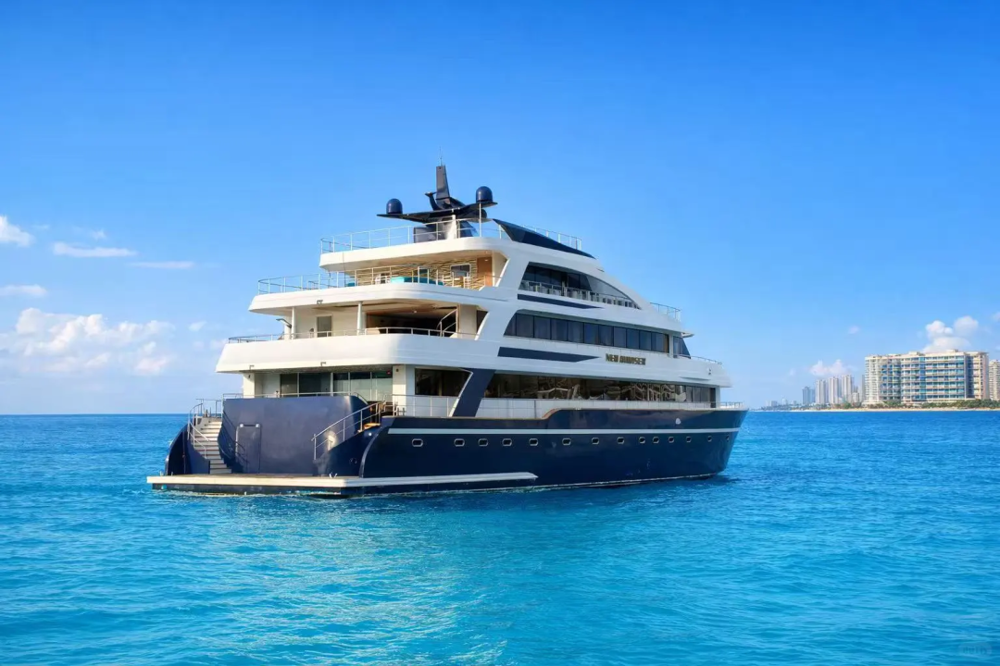
NEO Cruiser · Four Atolls Route
2026.08.13-08.20，搭乘 NEO Cruiser 进入马尔代夫中部经典海域：北马累、南马累、南阿里、北阿里与瓦武环礁。
四方线是马尔代夫船宿里最经典的一条中部线路。它不像深南线那样以强流和海沟为主，却能把清澈海水、外礁、鱼群、水道和珊瑚生态串在一周里。
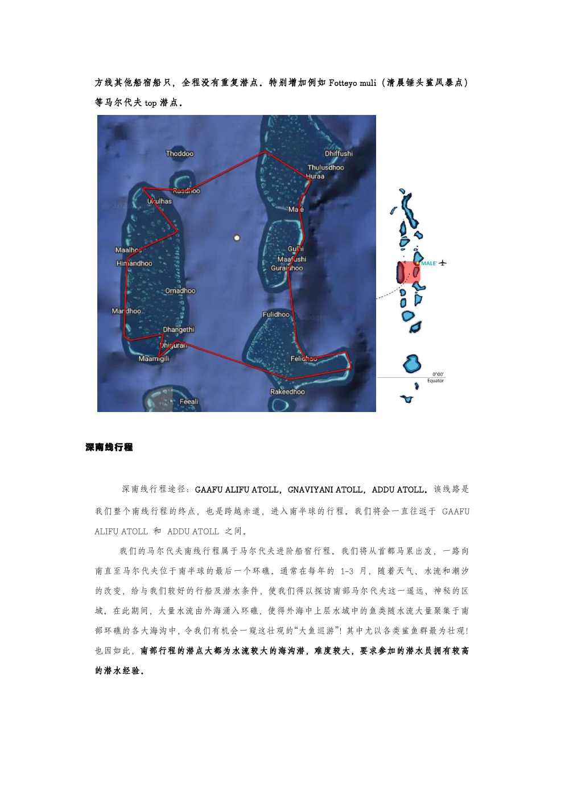
NEO Cruiser 主船长约 45 米，宽约 11 米。全船独立空调，客舱静音设计，配备星链 WiFi，并具备全天候及夜间航行能力。
夜间航行让白天更多时间留给潜水，也让四方线可以覆盖更大的中部海域。醒来时，窗外可能已经换成下一片环礁。
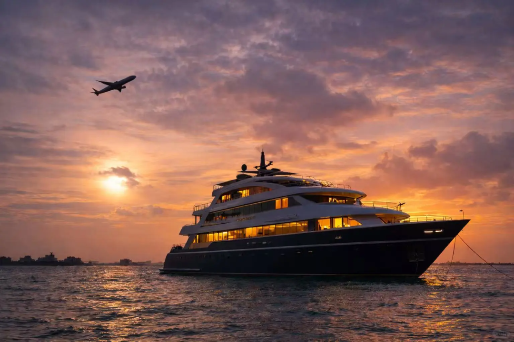
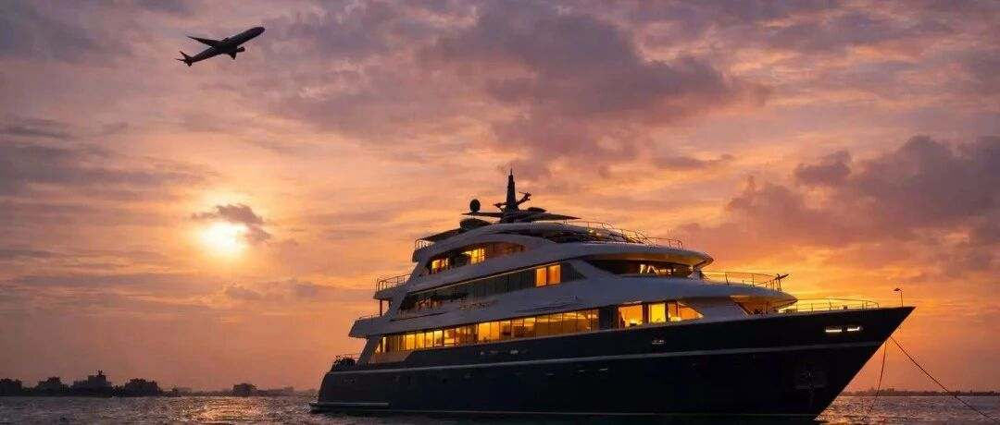
空间体量适合中大型船宿，一周航行和潜水都围绕主船展开。
减少重复潜点，把航行时间交给夜晚，把白天留给潜水。
船上提供网络连接，适合需要基础沟通和内容同步的人。
四方线的魅力不是押注单一生物，而是把中部马尔代夫的经典潜水类型打包：清澈礁盘、外礁、水道、鱼群、鲨鱼和珊瑚生态。
在水流带来的营养交换中，观察鱼群聚集和鲨鱼巡游。
中部海域常见丰富鱼群，是四方线很有记忆点的画面。
有机会安排清晨锤头鲨相关潜点，具体按海况与船方判断。
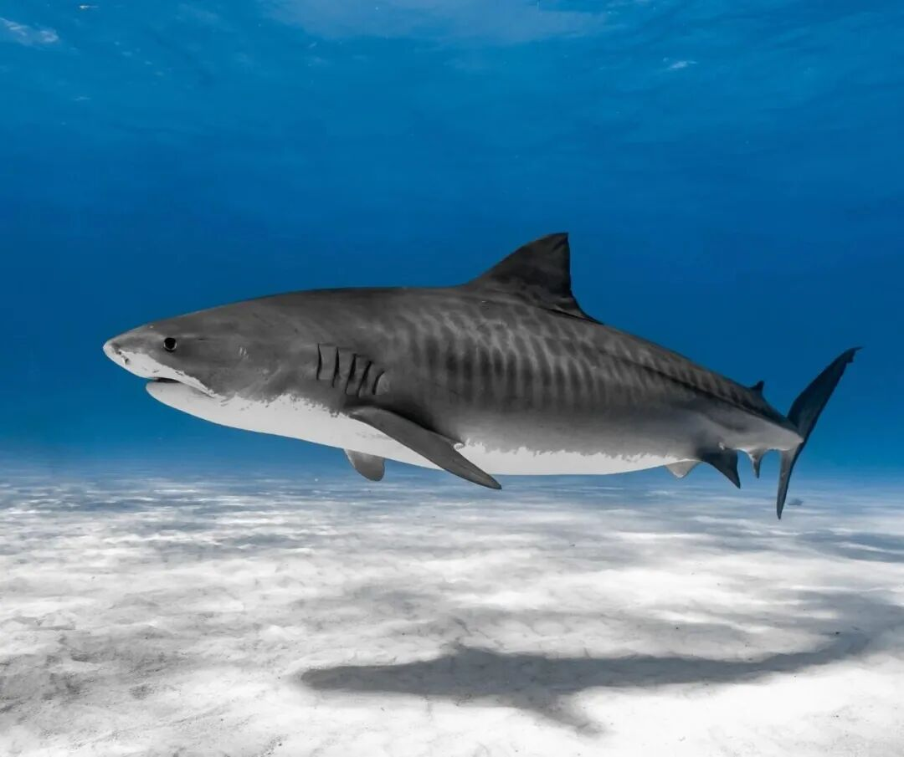
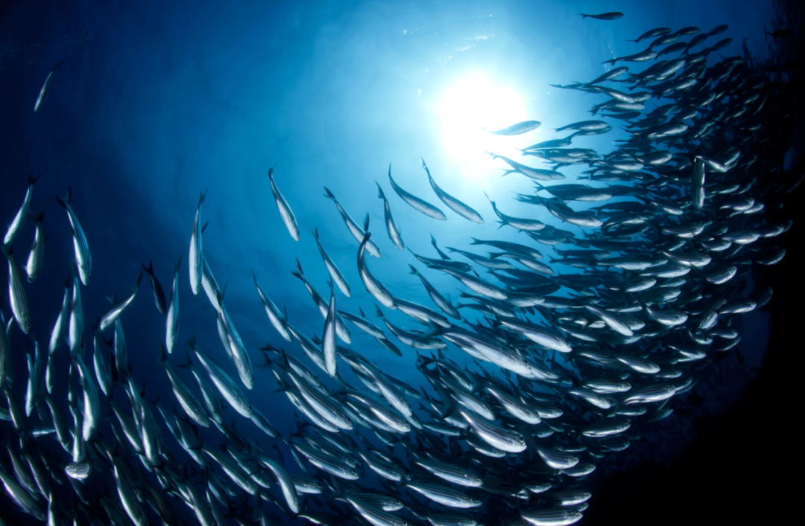
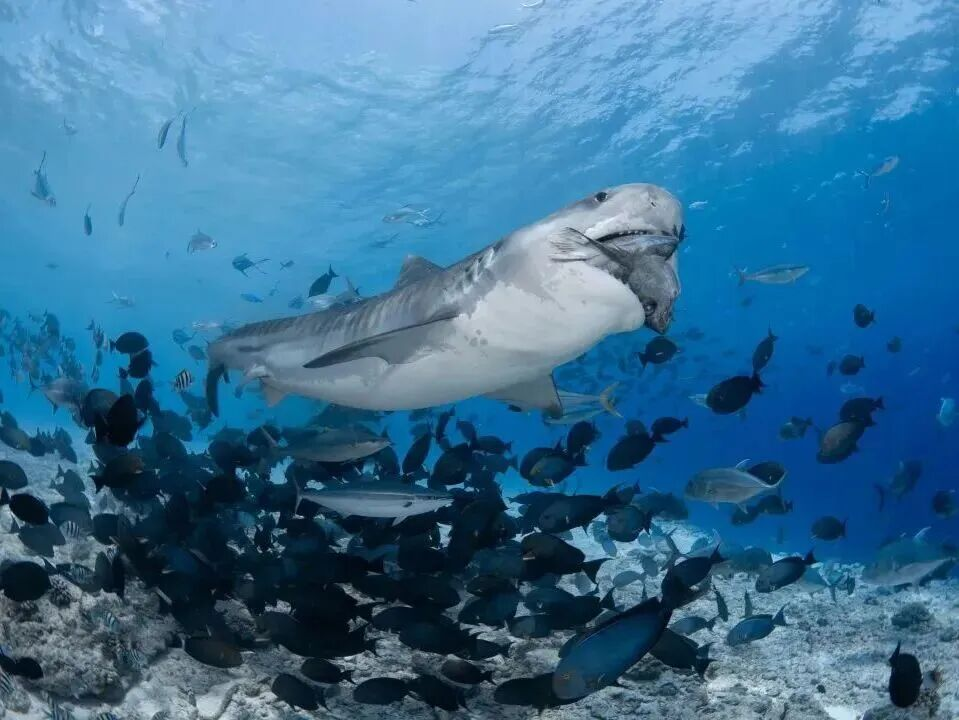
船宿不是住在一个固定岛上，而是每天醒来都靠近新的潜点。潜完回到船上，吃饭、休息、看日落，再准备下一潜。
顶层甲板，独立空间与海景视野，适合想要更强私密感的人。
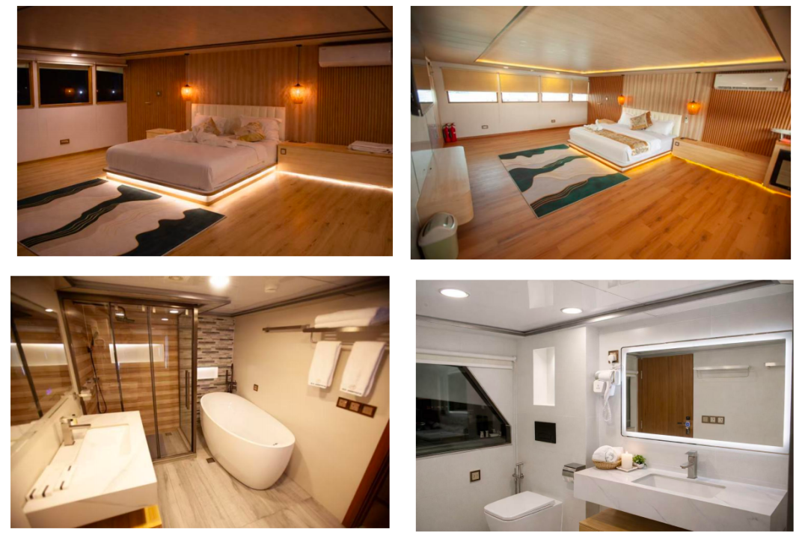
分布在主甲板与上甲板，适合情侣、朋友或潜伴拼房。
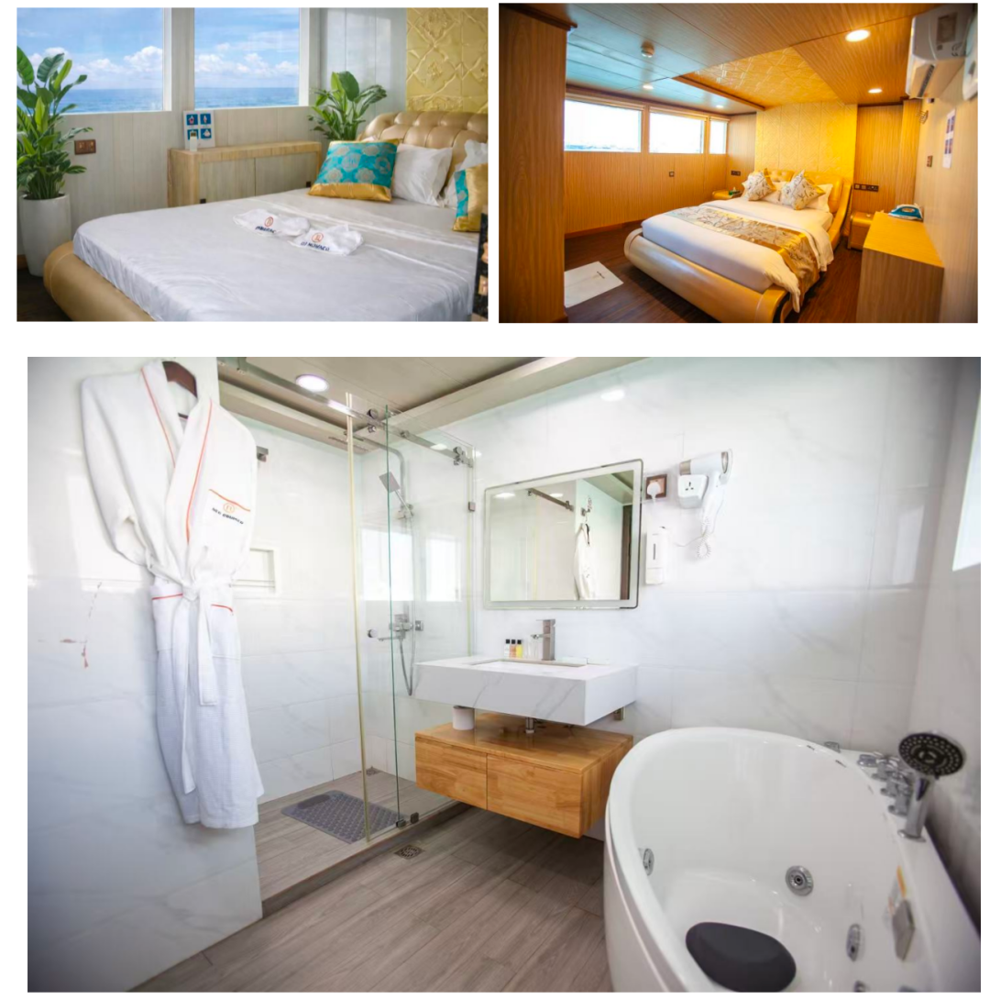
大床、双床和三床组合，适合不同人数与入住偏好的同行组合。
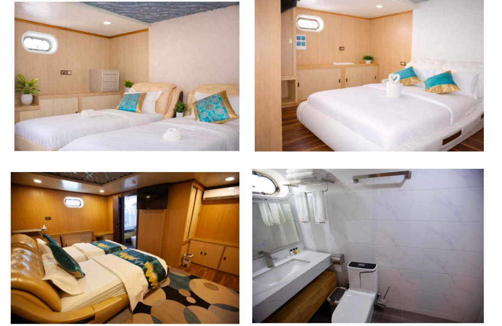
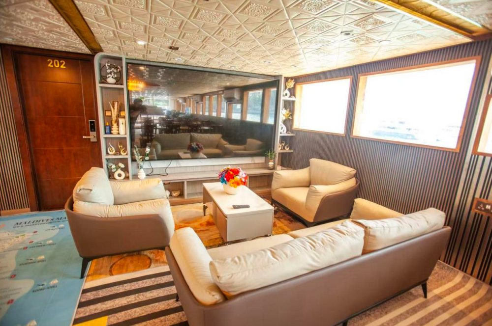
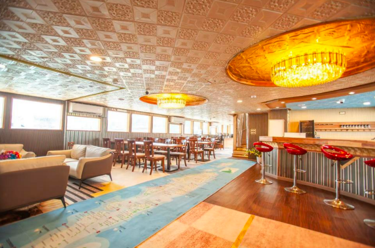
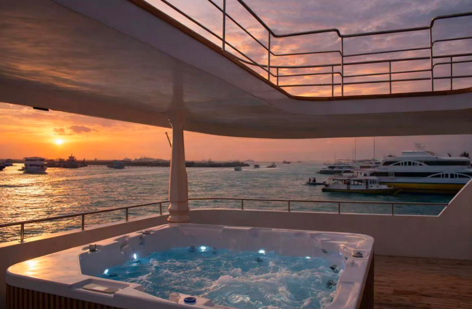
这不是每天换岛的旅行，而是一条围绕潜水效率设计的海上路线。船负责移动，白天交给海。
完成登船、入住、装备整理和船宿说明。第一天重点是进入船宿节奏，熟悉潜水流程与船体空间。
围绕北马累、南马累、南阿里、北阿里和瓦武环礁展开。每天根据海况安排 2-3 潜，可能包含夜潜。
完成离船安排。回程航班建议预留足够时间，并遵守潜水后飞行间隔要求。
实际潜点、潜数和顺序会根据天气、海况、水流和船方安全判断调整。
一周时间，不追赶岛屿。
让船带你醒在下一片海。